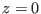
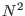
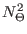
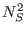
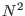
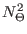
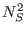
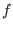

Next: Compute Up: Fortran: Module Interface kpp: Previous: Initialise Contents
INTERFACE:
subroutine do_kpp(nlev,h0,h,rho,u,v,NN,NNT,NNS,SS,u_taus,u_taub, &
tFlux,btFlux,sFlux,bsFlux,tRad,bRad,f)
DESCRIPTION:
Here, the time step for the KPP model is managed. If kpp_interior=.true. in kpp.nml, the mixing algorithm for the computation of the interior diffusivities is called first. This algorithm is described in section 4.8.3. Then, if kpp_sbl=.true. and kpp_bbl=.true., the algorithms for the surface and bottom boundary layer are called. They are described in section 4.8.4 and section 4.8.5, respectively.
If this routine is called from a three-dimensional code, it is essential to pass the correct arguments. The first 3 parameters relate to the numerical grid, discussed in section 3.1.2. Note that h0 denotes the local bathymetry, i.e. the positive distance between the reference level  and the bottom.
The next three parameters denote the potential density, ,
and the two mean velocity components,  and
and  . The buoyancy frequency, ,
and the different contributions to it,
 and , have to be computed
from the potential density as discussed in section 3.2.15. The shear frequency,
. The buoyancy frequency, ,
and the different contributions to it,
 and , have to be computed
from the potential density as discussed in section 3.2.15. The shear frequency,
 , is defined in (36). The vertical discretisation does not necessarly
have to follow (37), since in the KPP model no TKE equation is solved
and thus energy conservation is not an issue. All three-dimensional fields have to
be interpolated "in a smart way" to the water column defined by GOTM. The corresponding
interpolation schemes may be quite different for the different staggered grids,
finite volume, and finite element approaches used in the horizontal. Therefore,
we cannot offer a general recipe here.
, is defined in (36). The vertical discretisation does not necessarly
have to follow (37), since in the KPP model no TKE equation is solved
and thus energy conservation is not an issue. All three-dimensional fields have to
be interpolated "in a smart way" to the water column defined by GOTM. The corresponding
interpolation schemes may be quite different for the different staggered grids,
finite volume, and finite element approaches used in the horizontal. Therefore,
we cannot offer a general recipe here.
The bottom friction velocity is computed as described in section 3.2.10. If this
parameter is passed from a three-dimensional code, it has to be insured that the parameter
 in (24) is computed consistently, see (25).
in (24) is computed consistently, see (25).
All fluxes without exception are counted positive, if they enter the water body. Note that for consistency, the equations of state in GOTM cannot be used if the KPP routines are called from a 3-D model. Therefore, it is necessary to pass the temperature and salinity fluxes, as well as the corresponding buoyancy fluxes. The same applies to the radiative fluxes. The user is responsible for performing the flux conversions in the correct way. To get an idea have a look at section 8.4.8.
The last argument is the Coriolis parameter, . It is only used for clippling the mixing depth at the Ekman depth.
USES:
IMPLICIT NONEINPUT PARAMETERS:
number of grid cells
integer :: nlev
bathymetry (m)
REALTYPE :: h0
thickness of grid cells (m)
REALTYPE :: h(0:nlev)
potential density at grid centers (kg/m^3)
REALTYPE :: rho(0:nlev)
velocity components at grid centers (m/s)
REALTYPE :: u(0:nlev),v(0:nlev)
square of buoyancy frequency (1/s^2)
REALTYPE :: NN(0:nlev)
square of buoyancy frequency caused by
temperature and salinity stratification
REALTYPE :: NNT(0:nlev),NNS(0:nlev)
square of shear frequency (1/s^2)
REALTYPE :: SS(0:nlev)
surface and bottom friction velocities (m/s)
REALTYPE :: u_taus,u_taub
surface temperature flux (K m/s) and
salinity flux (psu m/s) (negative for loss)
REALTYPE :: tFlux,sFlux
surface buoyancy fluxes (m^2/s^3) due to
heat and salinity fluxes
REALTYPE :: btFlux,bsFlux
radiative flux [ I(z)/(rho Cp) ] (K m/s)
and associated buoyancy flux (m^2/s^3)
REALTYPE :: tRad(0:nlev),bRad(0:nlev)
Coriolis parameter (rad/s)
REALTYPE :: f
REVISION HISTORY:
Original author(s): Lars Umlauf
Karsten Bolding 2012-01-24